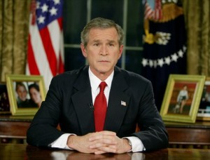

Analysts credit the Labour Party’s strong showing in the U.K. election to economic issues, but its leader, Jeremy Corbyn, also told voters the truth about how the West’s Mideast wars have spread terrorism, notes Lawrence Davidson.
By Lawrence Davidson
On May 26, Jeremy Corbyn, the leader of British Labour Party, made a speech which dealt in large part with security and foreign policy. Much of his presentation was surprisingly accurate. Here is what he said:

Jeremy Corbyn, the new leader of Great Britain’s Labour Party.
—There is a cause-and-effect relationship “between wars our governments supported and fought in other countries and terrorism here at home.” For instance, the May 22 Manchester bombing, which killed 22 people, may well be connected to the United Kingdom’s involvement in the overthrow of the Libyan government of Muammar Gaddafi and the subsequent civil wars.
—This cause-and-effect relationship is not a matter of speculation. “Many experts, including professionals in our intelligence and security services, have pointed to these connections.”
—Past governments have not been willing to address these connections, and now the people of the U.K. are confronted with a “war on terror that is simply not working.”
—“We need a smarter way to reduce the threat from countries that nurture terrorists and generate terrorism.” Therefore, Corbyn promised that, if he were to become the leader of the British government, he would “change what we do abroad.”
Corbyn’s speech is unusual because political leaders rarely point out that policies supported by major special interest groups (such as the Zionists, Saudis and the arms industry) are really catastrophic errors. More rarely still do politicians say so in public. In the case of terrorist attacks, almost every Western leader has blamed “radical Islam” (leaving out, of course, any reference to Saudi Wahhabism).
The public at large has gone along with this view because it echoes the media message that constitutes the source of their knowledge on most non-local subjects. The media outlets have never told them that the murderous foreign policies of their own governments contributed to terrorism coming to their shores. And now, along comes Jeremy Corbyn’s message that British policies abroad have something to do with British tragedies at home.
The Reaction
Such a fundamental challenge to policy can be traumatic, so Corbyn’s political foes have responded with indignation. For instance, Ben Wallace, Minister of State for security in the present Conservative government, labeled Corbyn’s remarks as “crass and appallingly timed.” The word “crass” means rude or vulgar and it is hard to see how stating a truism in acceptable English qualifies as crass.

U.S. Secretary of State John Kerry sits with British Prime Minister Theresa May in the White Room No. 10 Downing Street in London, U.K., on July 19, 2016. [State Department Photo]
Wallace also indulged in wrongheaded denial. He charged Corbyn with being ahistorical in his assessment of terrorist enemies. He stated that “these people [the terrorists] hate our values, not our foreign policy.”
It is depressing that conservatives throughout the Western world have learned so little – if anything at all – since 2001. That is the year George W. Bush delivered the grotesquely misleading line that Ben Wallace now echoes. Right after 9/11 Bush proclaimed the terrorists do what they do (at least in the West) because “they hate our freedoms.”
Anyone who is familiar with the attitudes of Middle East militants, religious or secular, knows that the vast majority do not care what sort of values and freedoms we practice in our own countries. However, they do care about the damaging foreign policies we impose upon their countries.
Tim Farron, the British Liberal Democratic leader, also went after Corbyn for using the moment of the Manchester terrorist attack to make “a political point.” Apparently, though, it’s a point that Farron has missed. What is important about Corbyn’s statement is that it properly contextualizes not only the Manchester attack but most of all other terrorist attacks in the West. Corbyn’s message is an accurate historical analysis that has political implications.
To What Avail the Truth?
Politicians obviously have self-interested reasons for denying that they have misinterpreted, miscalculated, and then persisted in bad policies that have resulted in death and destruction for their own countrymen as well as others. No doubt a sort of special interest-induced myopia allows some of them to believe that if they only stick to their strategy they will prevail.
{kind=link}

President George W. Bush announcing the start of his invasion of Iraq on March 19, 2003.
This is certainly the case with the American President Donald Trump. After the latest terror attack in London he let loose a Twitter broadside telling the world “we must stop being politically correct and get down to the business of security for our people.”
This lined up nicely with Prime Minister Theresa May’s public comment that the British government has been “too tolerant” toward terrorists. These words have little real meaning. They are more likely code words for continued Western violence in the Middle East, which Mr. Corbyn correctly identifies as the reason there are terrorist attacks in our part of the world in the first place.
A recent British poll conducted just before the June 8 election indicated that 75 percent of those contacted now believe that Jeremy Corbyn is correct and there is a connection between intervention into the Middle East morass and terrorism within the U.K. The poll claims its sample is representative of the population as a whole.
Then on June 9, the U.K. had its general election. As a result the Conservatives remain the largest party in parliament, but with a seriously reduced number of seats. In order to rule with an outright majority, a party needs 326 seats. The Conservatives won only 319 compared to Labour’s 261. There are several other parties such as the Liberal Democrats mentioned above, but their seat count is much less. For example the Liberal Dems won only 12 seats. All in all it was a comparative win for Labour and loss for the Conservatives.
People cast their votes for many different reasons – mostly local in nature (thus the notion of voting one’s pocketbook). However, terrorism is a factor that has been invading the local space of more and more British citizens, and so we can safely assume that at least some who supported the Labour Party in this election did so because they heeded Jeremy Corbyn’s warning of a connection between the U.K.’s present foreign policy and national insecurity. As for those who pinned their hopes on continued Conservative Party rule, they also inadvertently voted for endless terrorism in their own backyard.
Lawrence Davidson is a history professor at West Chester University in Pennsylvania. He is the author of Foreign Policy Inc.: Privatizing America’s National Interest; America’s Palestine: Popular and Official Perceptions from Balfour to Israeli Statehood; and Islamic Fundamentalism. He blogs at www.tothepointanalyses.com.